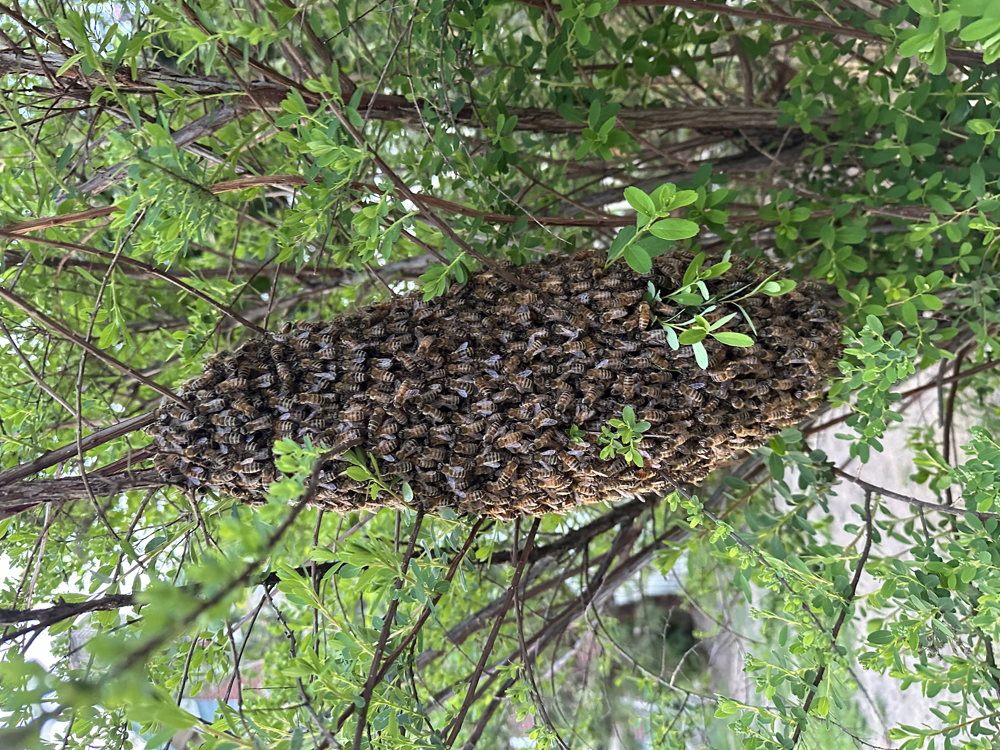

Free honey bee swarm collection in Harrisburg, PA
If you see a cluster of honey bees hanging from a tree, fence, mailbox, or the side of a building in the Harrisburg area, call us right away — 717-379-3248. The Alleman Apiary collects accessible swarms throughout Central Pennsylvania at no charge during swarm season. We're working beekeepers with 10+ years of experience, the bees go straight into our managed apiaries, and we respond same-day during peak swarm season (April through July). Don't spray the swarm. Don't try to capture it yourself. Don't wait — they'll move on within 24 to 72 hours if not collected.
What exactly is a honey bee swarm?
A swarm is what happens when a healthy honey bee colony divides and reproduces. The old queen leaves the original hive with about half the workers, and they cluster together in the open while scout bees search for a new home. The cluster is usually softball- to basketball-sized, hangs from a single anchor point (tree limb, fence post, mailbox, eaves), and stays put for anywhere from a few hours to a few days.
Swarms are remarkably docile. They have no comb, no brood, and no honey to defend — they're full of honey from the old hive (which keeps them too busy and well-fed to be aggressive). You can stand within a few feet of a calm swarm without much risk. That said: if you're allergic to bee stings, keep distance and call us.

What to do if you see a swarm
Do this
- Call or text 717-379-3248 immediately. Send a photo if you can. Swarms can leave at any time.
- Keep kids and pets back — even docile bees can sting if disturbed.
- Note the height and location so we can figure out gear (ladder, bucket, vacuum) before we arrive.
- Wait. Swarms look dramatic but they're not destructive. Leave them alone until we get there.
Do NOT do this
- Don't spray them. Pesticides waste a healthy colony, can drift onto pollinator plants, and you'll need someone to remove dead bees anyway.
- Don't knock them down with a hose, broom, or stick. You'll scatter them, anger them, and lose your chance for a clean collection.
- Don't try to vacuum them yourself. Without proper equipment a regular shop vac kills most of the bees.
- Don't seal up the area if they've moved into a wall — that's a different situation and you should call before doing anything.
When is swarm season in Central Pennsylvania?
In our area, swarm season runs from mid-April through early July, peaking in May and the first two weeks of June. Late-season swarms can happen into August but are less common. If you see a cluster of bees hanging in the open during these months, it's almost certainly a honey bee swarm.
Outside of swarm season — late summer, fall, and winter — you're more likely seeing yellow jackets, bald-faced hornets, or wasps, not honey bees. Send us a photo at 717-379-3248 and we'll tell you what you have for free.
Why we don't charge
Healthy swarms are valuable to a working beekeeper. They're how apiaries grow. So when we collect a swarm from your yard, we're getting a free new colony of bees and you're getting a fast removal — that's a fair trade for both of us. There's no catch.
We collect accessible swarms (within reach of a step ladder, not 40 feet up a tree, not buried inside a chimney) at no charge throughout our service area. If a swarm is in a tough location and requires extension ladders or bucket trucks, we'll let you know up front before any work begins.
Where we collect
We respond to swarm calls throughout Dauphin, Cumberland, Lebanon, and York Counties — including Harrisburg, Paxtang, Penbrook, Steelton, Highspire, Middletown, Hummelstown, Hershey, Palmyra, Annville, Cleona, Lebanon, Grantville, Linglestown, Colonial Park, Susquehanna Township, Lower Paxton, Camp Hill, Mechanicsburg, Lemoyne, New Cumberland, Wormleysburg, Enola, Marysville, Halifax, Millersburg, Elizabethtown, Mount Joy, Mount Wolf, Manchester, Dillsburg, Carlisle, Boiling Springs, and surrounding Central Pennsylvania communities.
Outside that range? Call anyway — we know most of the working beekeepers in Central PA and we'll connect you with the closest one.
How a swarm collection actually works
- We assess the swarm. Size, location, accessibility, condition. A typical collection takes 30 minutes to an hour from arrival to departure.
- We catch them. Most of the time we use a swarm box (a simple wooden box with a lid) positioned just below the cluster. With a sharp shake, the bees fall in. The queen comes with — and once she's in the box, the rest follow quickly.
- We let them settle. We leave the box in place for 30–60 minutes if possible so any flying bees can rejoin the cluster. Then we close it up and load it.
- The bees come home with us. They go to one of our managed apiaries, get a proper hive box with frames, and start building a new colony immediately. Most swarms produce honey their first year with us.
Swarm FAQ
How quickly can you get here?
During peak swarm season (April through early July), we prioritize same-day response whenever possible. Outside peak season, usually within 24 hours. Don't wait to call — swarms are temporary and they leave on their own schedule, not yours.
What if the swarm leaves before you arrive?
It happens. Scout bees find a new home, the swarm takes off, and there's nothing to collect. No charge — we only charge when we actually get bees. Call us anyway when you spot one; if they've moved on by the time we get there, no harm done.
The bees moved into my wall / tree / chimney. Is that still a swarm?
No, that's an established colony — once bees move into a cavity and start building comb, the situation changes. Established colonies require structural removal, not swarm collection, and pricing is different. See our Bee Removal page, or just call.
Will the swarm sting me?
Almost certainly not, if you leave them alone. Swarming bees are full of honey and have no hive to defend, which makes them about as docile as honey bees ever get. The exception is if someone disturbs the cluster, sprays it, or has a known allergy. Keep distance and call us — that's the formula.
What if it's not a honey bee swarm?
Send a photo to 717-379-3248. Bumble bees, yellow jackets, bald-faced hornets, paper wasps, and carpenter bees all get mistaken for honey bees regularly. We identify what you actually have for free. See the bee/wasp/hornet ID guide on our Bee Removal page.
Can I keep the swarm and start beekeeping myself?
If you've thought about getting into beekeeping, a swarm in your yard is actually a great starting point — it's a free, healthy colony and they tend to be easier to handle than packaged bees. We offer beekeeping mentorship and starter equipment. Tell us when we arrive and we can talk through what setting up a hive looks like. See Apiary Services.
See a swarm? Don't wait.
Same-day response in swarm season. Send a photo if you can — we identify free.
Call or Text 717-379-3248